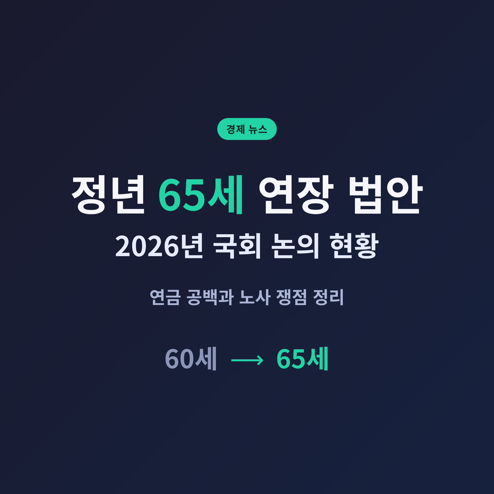
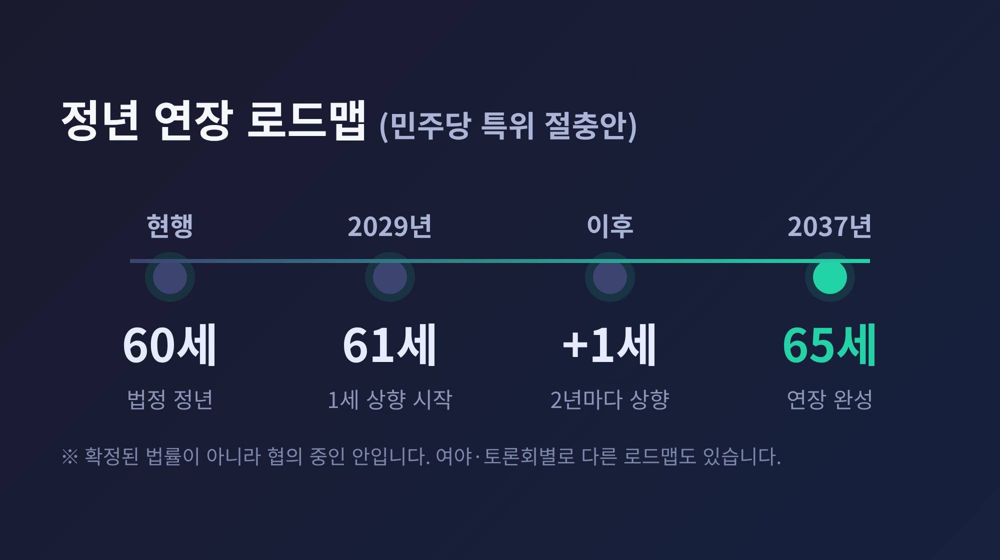
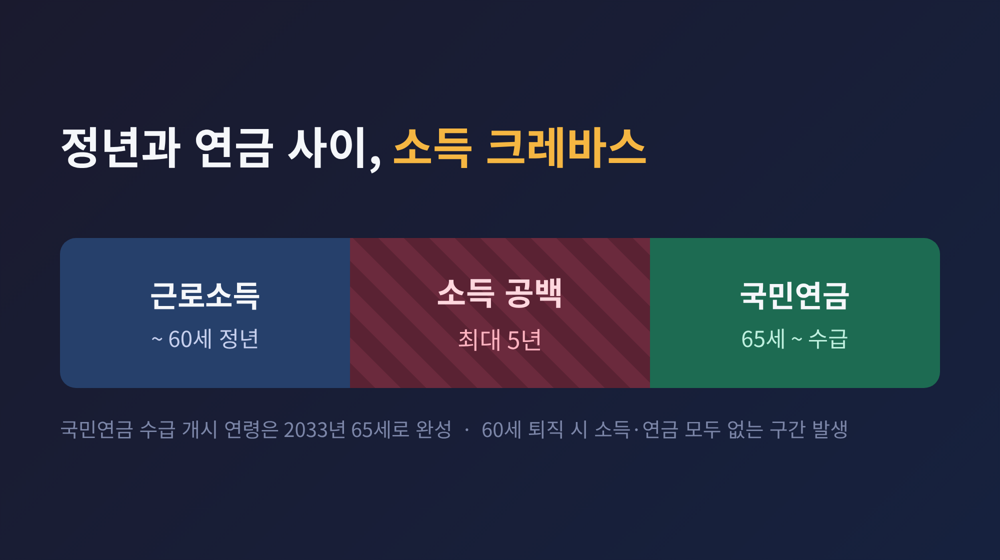
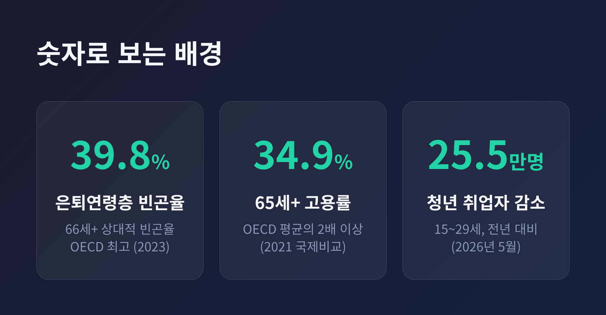
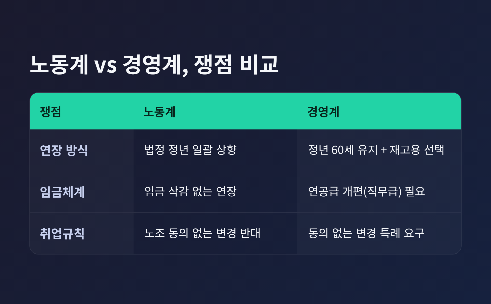
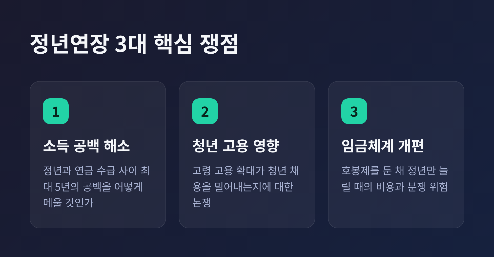

정년 65세 연장 법안, 2026년 국회 어디까지 왔나 — 연금 공백과 노사 쟁점 정리

정년 65세 연장 법안이 2026년 하반기 국회의 화두로 다시 떠올랐습니다.
이번 글에서는 법안의 내용과 배경, 그리고 노사가 맞서는 쟁점을 차분히 정리해 보겠습니다.

지금 국회에서 벌어지는 일
현행 법정 정년은 만 60세입니다.
2016년 300인 이상 사업장부터 의무화됐고, 이듬해 전면 시행됐습니다.
이 60세를 65세로 늘리자는 법안이 지금 국회에 올라 있습니다.
정년 연장은 이재명 대통령의 대선 공약이기도 합니다.
가장 최근에 거론되는 안은 더불어민주당 정년연장특별위원회의 절충안입니다.
골자는 이렇습니다.
현행 60세를 2029년에 61세로 올린다.
그 뒤 2년마다 한 살씩 높인다.
그렇게 2037년에 65세를 완성한다.
여기에 두 가지 장치가 함께 붙었습니다.
하나는 경영계가 요구해 온 '퇴직 후 재고용' 제도입니다.
다른 하나는 노동조합 동의 없이도 취업규칙을 바꿀 수 있게 하는 특례입니다.
다만 이 로드맵은 확정된 법률이 아닙니다.
과거 국민의힘은 "2033년까지 65세"를, 일부 토론회는 "2028년부터 매년 한 살씩"을 제시했습니다.
숫자는 아직 여러 갈래로 갈려 있는 셈입니다.
한 가지 분명한 사실은 일정이 자꾸 미뤄져 왔다는 점입니다.
2024년 말 발의하려다 지방선거 뒤로 미뤘고, 2026년 6월 입법도 무산됐습니다.
결국 논의는 하반기로 넘어왔습니다.
왜 지금 이 이야기가 중요한가 — '소득 크레바스'
핵심은 정년과 연금 사이의 틈입니다.
국민연금 수급 개시 연령은 계속 뒤로 밀려 왔습니다.
지금은 63세에서 시작해, 1969년생 이후부터는 65세가 되어야 연금을 받습니다.
2033년이면 65세 수급이 완성됩니다.
문제는 여기서 생깁니다.
60세에 회사를 나오면, 연금을 받기까지 최대 5년이 빕니다.
근로소득도 없고 연금도 없는 이 구간을 흔히 '소득 크레바스'라 부릅니다.

이 공백은 통계로도 무겁게 다가옵니다.
66세 이상 은퇴연령층의 상대적 빈곤율은 39.8%입니다(2023년 기준).
OECD 회원국 가운데 가장 높은 수준입니다.
노인들이 일을 놓지 못하는 이유도 여기 있습니다.
65세 이상 고용률은 34.9%로, OECD 평균의 두 배를 넘습니다.
연금이 부족하니 늦은 나이까지 일터에 남는 것입니다.
이런 흐름은 한국만의 고민이 아닙니다.
영국과 독일은 이미 연금 수급 연령을 67세까지 올리는 방향으로 가고 있습니다.
수명은 길어지고 연금 재정은 빠듯해지니, 일하는 기간을 늘리는 쪽으로 세계가 움직이는 셈입니다.
예전엔 정년까지 다니면 노후가 어느 정도 보장된다는 감각이 있었습니다.
지금은 정년과 노후 사이에 다리를 놓아야 하는 시대가 됐습니다.

노동계와 경영계, 어디서 부딪히나
같은 정년 연장을 두고도 두 진영의 셈법은 다릅니다.
노동계는 법으로 정년을 일괄 상향하자는 입장입니다.
원칙은 '임금 삭감 없는 정년연장'입니다.
민주노총 쪽에서는 "2037년까지 늘리는 안은 너무 늦다"며 시점을 앞당기라고 요구합니다.
다만 연장을 앞당긴다면 재고용을 병행하는 방식은 받아들일 수 있다고 말합니다.
경영계의 시선은 반대편에 있습니다.
법정 정년은 60세로 두되, 기업이 재고용을 선택하게 하자는 쪽입니다.
근속에 따라 임금이 오르는 연공급, 이른바 호봉제 아래에서 정년만 늘리면 인건비 부담이 커진다는 이유에서입니다.

그래서 취업규칙 특례를 놓고도 정면으로 갈립니다.
경영계는 임금체계를 바꾸려면 노조 동의 없이도 취업규칙을 손볼 수 있어야 한다고 봅니다.
노동계는 같은 일을 하는데 사용자가 일방적으로 임금을 깎는 방식에는 동의할 수 없다고 맞섭니다.
청년 고용이라는 또 하나의 무게
정년 연장이 미뤄진 데에는 청년 고용에 대한 걱정도 있습니다.
윗세대가 더 오래 남으면 청년 채용이 줄어들 수 있다는 우려입니다.
경직적인 노동시장에서는 정년 연장이 오히려 총고용을 줄인다는 연구도 있습니다.
2016년 정년 60세 의무화 뒤 대기업에서 청년 고용이 약 11.6% 줄었다는 분석이 인용됩니다.
물론 이 추정은 연구 설계에 따라 해석이 갈릴 수 있습니다.
'고령 고용과 청년 고용은 대체 관계가 아니다'라는 반론도 있습니다.
그러나 최근 지표는 정치권을 무겁게 눌렀습니다.
2026년 5월 15~29세 취업자가 1년 전보다 25만5,000명 줄었습니다.
코로나 대유행기인 2021년 1월 이후 가장 큰 감소 폭이었습니다.
결국 문제는 '숫자'가 아니라 '설계'
전문가들이 반복하는 말이 있습니다.
정년은 숫자가 아니라 설계의 문제라는 것입니다.
연공급을 그대로 둔 채 정년만 늘리면 부작용이 뒤따르기 쉽습니다.
인건비 부담, 취업규칙을 둘러싼 소송, 차별적인 재고용 선발, 저임금 재고용의 고착 같은 것들입니다.
그래서 직무·성과 중심으로 임금체계를 함께 손봐야 한다는 목소리가 큽니다.

참고할 사례로는 일본이 자주 등장합니다.
일본은 2025년 4월부터 모든 기업이 65세까지 고용을 보장하도록 의무화했습니다.
방식은 기업이 고르게 했습니다.
2023년 기준으로 보면 계속고용, 곧 재고용이 69.2%로 가장 많습니다.
정년 연장은 26.9%, 정년 폐지는 3.9%에 그칩니다.
법으로 정년을 늘린 나라에서도 실제로는 재고용이 주류인 셈입니다.
앞으로의 관전 포인트
2026년 하반기, 논의는 다시 불붙을 가능성이 높습니다.
다만 청년 고용지표가 나빠지면서 속도 조절 기류도 함께 흐릅니다.
무게 중심은 '정년 몇 세'에서 옮겨가고 있습니다.
임금체계 개편, 재고용 설계, 취업규칙 특례 쪽으로 말입니다.
이 지점에서 노사 이견이 좁혀지지 않으면, 입법은 또 미뤄질 수 있습니다.
사회적 대화 기구인 경제사회노동위원회에서도 계속고용 논의가 병행되고 있습니다.
이미 현장에서는 변화가 조금씩 시작됐습니다.
행정안전부는 공무직 약 2,300명의 정년을 65세까지 늘리겠다고 했고, 대구에서도 400여 명이 그 대상에 올랐습니다.
법이 국회에 머무는 동안, 공공부문 일부가 먼저 문을 연 셈입니다.
정리하면 이렇습니다.
정년 65세 연장은 더 오래 일하자는 단순한 이야기가 아닙니다.
연금 공백을 어떻게 메울지, 그 부담을 세대와 노사가 어떻게 나눌지를 묻는 질문입니다.
정년은 끝의 문제가 아니라, 다음 시작을 어떻게 설계하느냐의 문제다.
몇 살까지 일할 수 있느냐고 묻는다면, 그 답은 아직 국회에 걸려 있습니다.
답이 정해지는 과정을 조용히 지켜볼 만합니다.
※ 이 글은 정보 제공을 목적으로 정리한 것이며, 특정 투자나 재무 판단을 권유하기 위한 것이 아닙니다. 제도와 수치는 입법 경과에 따라 달라질 수 있으니, 실제 판단은 최신 공식 자료를 함께 확인하시길 권합니다.